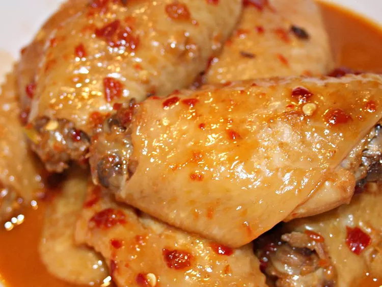

Spicy Chinese Chicken Wings

Description
These easy, spicy chicken wings are an excellent alternative to regular hot wings! I learned
this recipe from my mother, who is from Taiwan, and it was always a childhood favorite!
Almost all seasonings can be adjusted according to taste. (The Vietnamese chili garlic
sauce can be found at any oriental grocery or even most regular groceries).
(excerpt from allrecipes.com)
Ingredients (Original Recipe)
- 1 pound of chicken wings
- 2 tablespoons of white sugar
- ½ cup of soy sauce
- ¼ cup of rice wine
- 3 tablespoons of chili garlic sauce
- 1 tablespoon of sesame oil
- 2 cloves of garlic, minced
- ¼ cup of water
Steps
- Rinse and pat dry the chicken wings. Whisk together the sugar, soy sauce, rice
wine, chili garlic sauce, sesame oil, and garlic in a large bowl, then add the
chicken wings and toss to evenly coat.
- Heat a lightly oiled skillet over medium heat. Stir in the chicken wings, sauce,
and water. Cover and cook until the chicken wings are no longer pink at the
bone, turning the chicken wings occasionally, about 15 minutes. Remove lid and
continue cooking until the sauce has thickened, 5 to 10 minutes.
Home